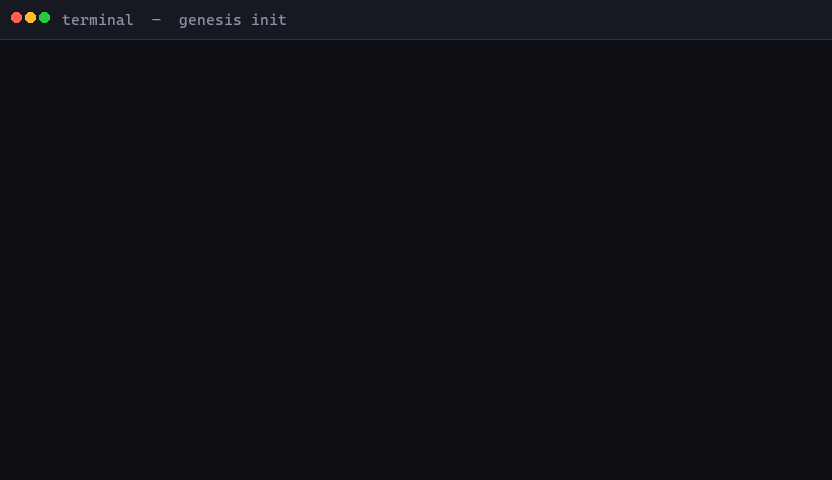

Scans 15–20 real repos, mines their Issues and active forks, then builds a scaffold that already knows the traps.

Every other scaffolder starts from a template. Genesis starts from production data.
Finds 15–20 GitHub repos building exactly what you described. Ranks by stars and active fork activity.
Reads up to 50 closed bug Issues per repo. Extracts recurring errors, security patches, architecture regrets.
Builds the "wise average" — what successful projects converge on — not just a copy of one repo.
Creates scaffold with tests and CI/CD. Runs a smoke test. Never declares success without exit code 0.
Built for developers who've been burned by boilerplate that doesn't survive contact with production.
Reads closed bug issues from production repos. Finds the feedparser hang, the Redis connection leak, the Celery task that silently drops — before you write the code.
Finds the top 3 active forks ranked by merged PRs in the last 6 months — not stars. Extracts their bug fixes and incorporates them into your pitfall list.
Caches solutions locally with a 6-month TTL and LRU eviction at 500 entries. Runs fast on repeat projects. Falls back to Stack Overflow on cache miss.
Say "I want the simple one" instead of typing A. Genesis maps natural language to architecture choices — no memorizing option letters.
Run genesis companion after scaffolding. Stays active, answers questions about your project, detects when you've moved on to something new.
Claude, GPT-4, Gemini, Ollama — all supported via LiteLLM. Set your key once with genesis config set LLM_API_KEY and it works everywhere.
Every tool answers a different question. Genesis is the only one that reads from production failures before it builds.
| Capability | Genesis Architect | Yeoman | Cookiecutter | create-react-app |
|---|---|---|---|---|
| Scans real GitHub repos before build | ✓ 15–20 repos | ✗ | ✗ | ✗ |
| Extracts pitfalls from GitHub Issues | ✓ 50 issues/repo | ✗ | ✗ | ✗ |
| Analyzes active forks (by merged PRs) | ✓ top 3 forks | ✗ | ✗ | ✗ |
| Generates scaffold with tests + CI/CD | ✓ smoke test required | ~ templates only | ~ templates only | ✓ React only |
| Stays active after scaffold (companion) | ✓ genesis companion | ✗ | ✗ | ✗ |
| Knowledge vault (solution cache) | ✓ 6-month TTL | ✗ | ✗ | ✗ |
| Works with any LLM provider | ✓ LiteLLM | ✗ | ✗ | ✗ |
| Language support | ✓ Python, JS, TS, Go, more | ✓ any | ✓ any | ✗ React only |
Option 1 — pip (standalone)
Option 2 — Claude Code skill
After scaffold — stay in companion mode